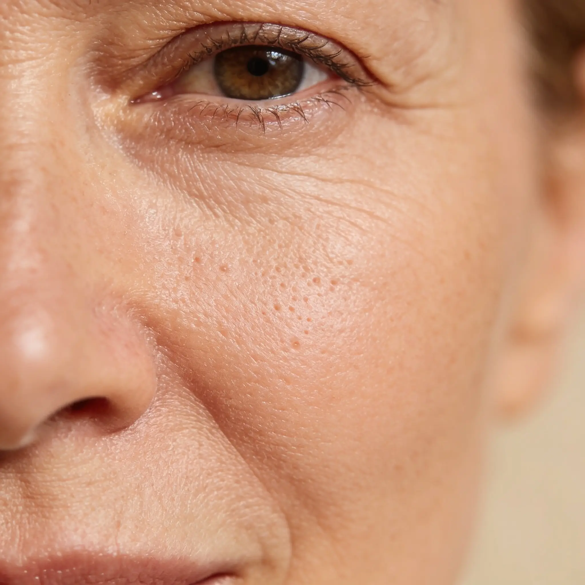
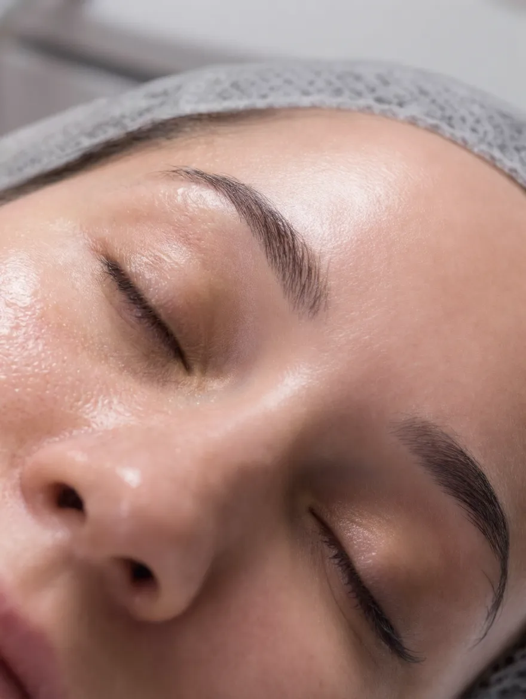
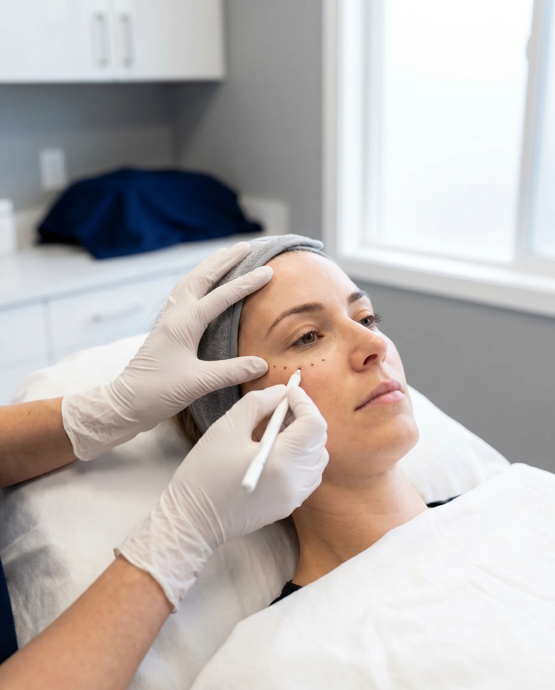

An ultrafine Endolift fibre is guided under the skin. No incisions, no stitches.
2/5
02How it works
An immediate lift
Laser energy heats the tissue beneath the skin, creating an immediate contraction and lift effect.

3/5

03How it works
Results that keep building
New collagen forms over 3–6 months, progressively improving firmness and definition.
4/5
Laser Lift
No scalpel. No general anaesthetic.
1–2 sessions, minimal downtime, results typically lasting 18–24 months. Book a consultation via the link in bio.
5/5
Instagram caption
Skin starting to feel less firm along the jawline? You don't need surgery to lift it.
Laser Lift uses Endolift fibre-optic laser technology to tighten from within. An ultrafine fibre is guided under the skin through a pinpoint entry. No scalpel, no stitches, no general anaesthetic.
The laser energy creates an immediate contraction and lift. Then your skin does the rest: new collagen builds over 3–6 months, so results keep improving long after you've left the clinic.
Most people need just 1–2 sessions, with minimal downtime, and results typically last 18–24 months.
If you've noticed laxity around your face, jaw or neck and surgery isn't for you, this is the conversation to have.
Skin starting to feel less firm along the jawline? You don't need surgery to lift it.
Laser Lift tightens from within using Endolift fibre-optic laser technology: no scalpel, no general anaesthetic, minimal downtime. There's an immediate lift, and then new collagen keeps building over 3–6 months, so results improve for months afterwards.
Most people need just 1–2 sessions, with results typically lasting 18–24 months.
If you'd like to know whether it's right for your skin, book a consultation: https://facesconsent.com/v1/bookings/puremedaesthetics?clinicSlug=puremed-aesthetics-466185
Done well, a liquid facelift restores structure your face has lost. Nobody should be able to tell you have had anything done.

2/5
3/5
The PureMed way
Assessment first, always.
A detailed facial assessment maps volume loss, sagging and asymmetry, so filler only goes where your face actually needs it.
4/5
Changed your mind later?
Adjustable. Even reversible.
We use hyaluronic acid fillers, so results can be adjusted, or even reversed, over time. Book a consultation via the link in bio.
5/5
Instagram caption
"Fillers always look fake."
Truth is, you only notice the bad ones.
A liquid facelift isn't about adding volume for the sake of it. It starts with a detailed facial assessment that maps where volume has been lost and where things have softened. Then structure goes back precisely where your face needs it.
Done well, the result isn't "filler face". It's your jawline a little more defined. Your cheeks the way they were a few years ago. You, looking rested.
And because we use hyaluronic acid fillers, results can be adjusted, or even reversed, over time if you change your mind.
Wondering what's right for your face? That's exactly what a consultation is for. Link in bio.
"Fillers always look fake." I hear this a lot. The truth? You only notice the bad ones.
A liquid facelift starts with a proper facial assessment, then restores lost structure exactly where your face needs it. Done well, nobody should be able to tell you've had anything done. You just look rested.
And because we use hyaluronic acid fillers, results can be adjusted or reversed over time if you change your mind.
Curious whether it's right for you? Let's talk it through first: https://facesconsent.com/v1/bookings/puremedaesthetics?clinicSlug=puremed-aesthetics-466185
The most important part of any treatment happens before it: the consultation.
Every treatment at PureMed starts the same way. We sit down, assess your skin properly, and talk honestly about what would help, and what wouldn't.
I explain the risks as clearly as the benefits. We only go ahead when you're fully comfortable. And if something isn't right for you, I'll tell you, even if that means no treatment at all that day.
That's what medically-led means in practice. A dental background gives me advanced knowledge of facial anatomy. The consultation is where that knowledge actually works for you.
If you've been thinking about a treatment and don't know where to start, start there.
The most important part of any treatment happens before it: the consultation.
Every appointment at PureMed starts with a proper assessment. Your skin, your goals, and an honest conversation about what would help and what wouldn't. I explain the risks as clearly as the benefits, and we only go ahead when you're fully comfortable.
If you've been curious about aesthetics but don't know where to start, start with a conversation: https://facesconsent.com/v1/bookings/puremedaesthetics?clinicSlug=puremed-aesthetics-466185
P
PureMed AestheticsFriday 7 August · 18:00 · Treatment education
Instagram caption
Noticing lines settling in around your forehead or eyes? Start with a conversation, not a treatment.
Dynamic lines, the ones from frowning, smiling and raising your eyebrows, develop because of how your face moves. Which is exactly why there's no one-size-fits-all answer to them.
The right starting point is a proper medical consultation. We look at how your face moves, what's causing the lines you've noticed, and whether treatment makes sense for you at all. Always with the aim of preserving your natural expression. Rested, not frozen.
No pressure, and no treatment on the day unless it's genuinely right for you.
Book a consultation to talk through lines and wrinkles. Link in bio.
Noticing lines settling in around your forehead or eyes? Start with a conversation, not a treatment.
Dynamic lines develop because of how your face moves, so there's no one-size-fits-all answer to them. A proper medical consultation looks at what's actually causing them, and whether treatment makes sense for you at all. Always with the aim of keeping your natural expression.
No pressure, and nothing happens on the day unless it's genuinely right for you.
Book a consultation to talk it through: https://facesconsent.com/v1/bookings/puremedaesthetics?clinicSlug=puremed-aesthetics-466185